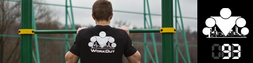

Этот блок не просто так называется ТУРБО ФРИСТАЙЛ, потому что каждый день мы будем чередовать ТУРБО тренировки и ФРИСТАЙЛ тренировки. И сегодня будет ПЕРВЫЙ фристайл комплекс. Но сначала нужно выполнить разминку и всадника на 30-60 секунд.
Как и во всех ФРИСТАЙЛ-комплексах сегодня вас ждет 5 подходов, которые вынут из вас душу и заставят проклинать весь мир. Но если вы их выдержите, то уйдете с тренировки полные благодати и умиротворения! Каждый подход нужно стараться выполнить не слезая с турника. Но если закончатся силы, и вы соскользнете, то переведите дух и продолжайте. Отдых между походами — 3-5 минут по самочувствию.
1 подход:
Х подтягиваний в нижней половине движения (с полного виса до угла 90 градусов в локтях)
Х подтягиваний в верхней половине движения (с угла 90 градусов до подбородка над турником)
Х подтягиваний в полную амплитуду
Х = 3, если вы новичок, Х = 5, если у вас продвинутый уровень, и Х = 7, если вы мастер турника.
2 подход:
В этом подходе вы начинаете с X подтягиваний узким верхним хватом, и после каждых X повторений будете отдалять кисти друг от друга на ширину двух кистей. То есть каждые X повторения вы будете делать более широким хватом, чем предыдущие. Идете на максимум, пока руки не расцепятся, или пока перекладина не закончится по ширине.
3 подход:
Х подтягиваний - Y секунд вис, подбородок за перекладиной
Х подтягиваний - Y секунд вис с углом 90 градусов в руках, голова под перекладиной
Х подтягиваний - Y секунд вис в нижнем положении(полный разгиб)
Х подтягиваний - Y секунд вис с углом 90 градусов в руках, голова под перекладиной
Х подтягиваний - Y секунд вис, подбородок за перекладиной
Х = 2 и Y = 5, если вы новичок, Х = 3 и Y = 7, если у вас продвинутый уровень, и Х = 4 и Y = 10, если вы мастер турника.
4 подход:
В этом подходе вы начинаете с X подтягиваний обычным верхним хватом, после чего переставляете одну из рук в нижний хват и делаете ещё X подтягивания (уже разнохватом), потом вторую руку переставляете в нижний хват и делаете ещё X подтягивания (нижним хватом), потом снова первую руку переставляете в верхний хват и ещё X раза подтягиваетесь (разнохватом), потом переставляете вторую руку и ещё X раза верхним. Если возникнет желание, можете пойти на второй круг такой.
5 подход:
Сделайте подход на максимум подтягиваний нейтральным хватом на одной перекладине.